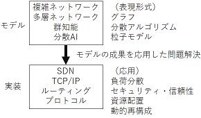

計算機ネットワークの研究に、生物や社会にもみられる広義のネットワークの一つと して捉える観点を重視して、取り組んでいます。 インターネットに代表される計算機ネットワークは不可欠な社会基盤の一つですが、 その構築や最適化に向けては課題が山積しています。 そこで、「個体が相互に関係を持つ全体」という観点から生態学や社会学なども 交えて研究が進んでいる分散協調や複雑ネットワークの理論やモデルの成果を、 現実の計算機ネットワークや知的情報処理に応用して成果をあげてきました。 そして、クラウド、エッジコンピューティング、IoT などが抱える、例えばタスクや 資源の最適配置、セキュリティ、Software Defined Networking や In-Network Computing といった実装手法などに係わる課題解決を目指しています。
従来の IoT は、クラウドに配置した Intrusion Detection and Prevention System （IDPS）と呼ばれる「門番」によってセキュリティを確保していますが、 広域データ収集分析を行う大規模な IoT では、負荷や機能を複数のエリアに分散 させるエッジコンピューティングの考え方が必要になります。 そこで、エッジごとに分散配置した IDPS を互いに協調させ、全体として広域 ネットワークをカバーする仮想的な大きな IDPS を実現する「分散協調 IDPS」を 提案し、その構築を科学研究費の支援も受けて進めています。
現在のインターネットは、SDN における物理ネットワークと論理ネットワークの 二層構成や、さらにその上のオーバーレイ・ネットワークや VPN なども含む 多層構成をなしており、移動体通信網の 5G の進展などにもみられるように、 今後もさらに多層化・複雑化・高度化していくのは間違いありません。 これまで独立に取り組んできた二つの研究、自律分散型のセキュリティ保全と 多層ネットワークにおける協調伝搬とを融合させることで、将来の多層で複雑な 計算機ネットワークに向けた効果的なセキュリティ保全に繋がるものと考え、 その実現に向けて挑戦を進めています。
クラウドコンピューティングにおける動的資源配置やワークフロー設計、すなわち いわゆるオーケストレーションは、エッジコンピューティングにおいてはますます 困難な問題になってきています。 これまで、全体が群れとして凝集する行動と各個体が縄張りを持って離散する行動と いう二つの異質な集団行動の間で相転移をみせる抽象的な統合モデルを考案して、 動的資源配置問題に応用する可能性を確認してきています。 これをさらに発展させることで、負荷状況に応じてエッジを動的に再構成・再配置 するオーケストレーションにまで展開できるものと考えており、その実現に向けて 研究を進めています。